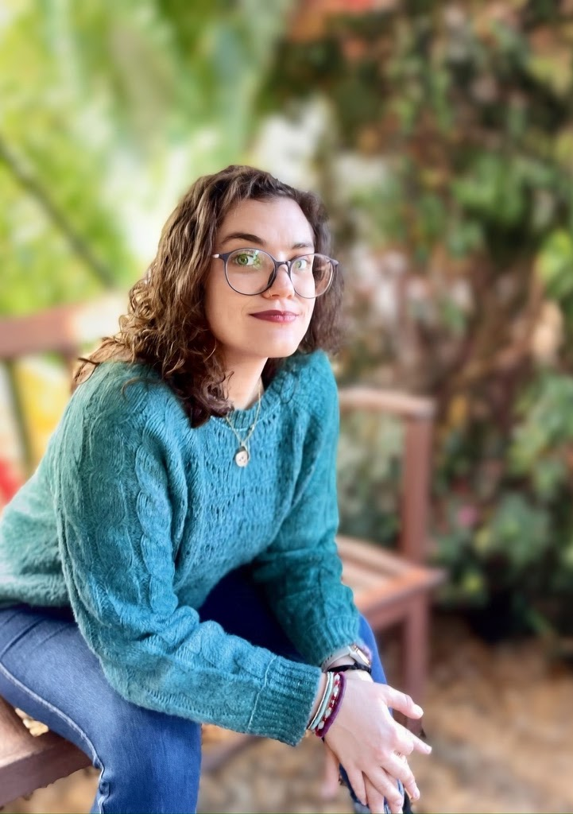
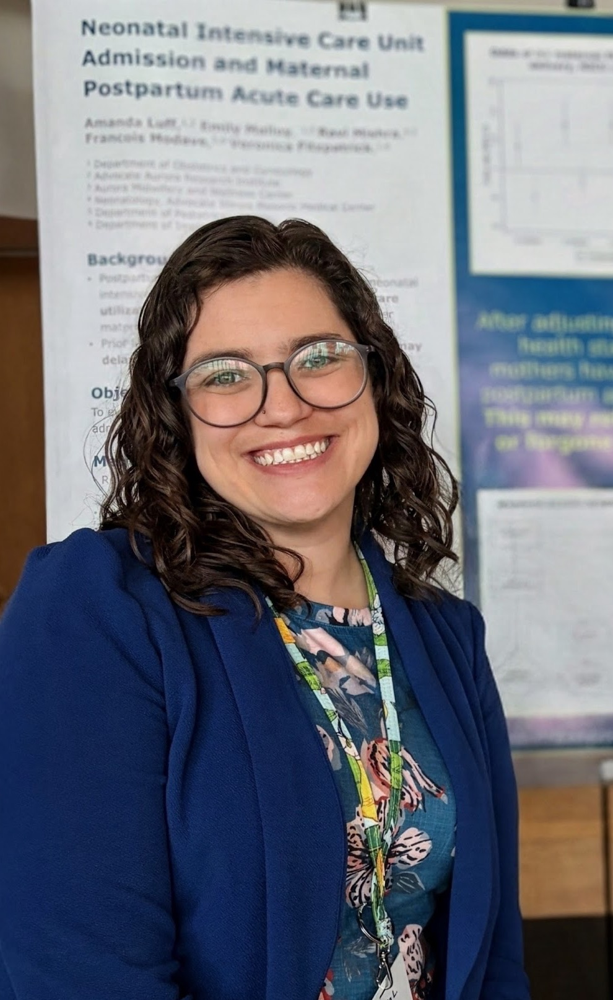

Milwaukee doula for birth, high‑risk pregnancy & NICU families
I'm Amanda, and I'm glad you're here!
I'm a doula with a doctorate in public health and over a decade of experience in maternal and child health. I believe birth looks different for everyone, and there's no single "right" way to do it.
Whether you're hoping for an unmedicated birth, planning an epidural, preparing for an induction or a scheduled cesarean, or aren't sure yet what you want, I offer the same respectful, judgment-free support. I have particular expertise in high-risk pregnancies and NICU stays, where that kind of support is often hardest to find.
We'll start with a free, no-obligation conversation.

- Certified Doula Birth and postpartum
- PhD in Public Health Doctorate and master's degrees in public health
- Over a decade of experience in maternal and child health
- Milwaukee County In person, or virtual anywhere
What I Offer
Lark Doula offers birth doula support, high-risk and complicated pregnancy support, and NICU support to families in Milwaukee and virtually.
Birth & Pregnancy Support
I offer birth doula support, pregnancy and postpartum planning, and emotional support along the way. That can mean preparing for labor, writing your birth preferences, having support during labor itself, or getting ready for postpartum and life with a newborn.
See packagesHigh-Risk & Complicated Pregnancy
If your pregnancy is high-risk or complicated, whether that means preeclampsia, gestational diabetes, twins, concerns about preterm birth, or a diagnosis you're still making sense of, I can help you understand what's going on and think through your questions and decisions. I'm also someone to talk to about how things are going.
How I support high-risk pregnanciesNICU Support
The NICU team cares for your baby. I'm here for you. Every NICU stay is different, so we'll work together to build a support plan that fits your family's needs: before birth, during the stay, and after you go home.
About NICU supportI am happy to work with families experiencing financial need, as well as Black, Indigenous, and LGBTQ+ families, to discuss a support plan that fits your needs and your budget.
Meet Amanda

I have been working in maternal and child health for over a decade as an educator and advocate.
My path to becoming a doula came from my own experience. I had a "low risk" pregnancy and planned for an unmedicated, low-intervention birth. However, my baby and I experienced severe complications, and my plans went out the window. I worked for the hospital where I gave birth and I knew my OBGYN and midwife professionally. Even with all of my knowledge, I felt lost navigating the NICU, my own recovery, and my transition to parenthood.
Even when we feel fully prepared, pregnancy and birth can be complicated to navigate. Having a dedicated support person to talk through what you are experiencing ensures you have the information and space to make the best choices for your family.
What you can expect from me
I listen first. I won't tell you what your birth should look like, and I won't judge the choices you make. I'll help you understand your options, prepare your questions, and feel supported in whatever you decide.
My Experience
- Madriella Doula Network Certified Professional Doula
- Certified Birth Doula
- Certified Postpartum Doula
- Childbirth Educator
- Breastfeeding Educator
- Trauma-Informed Care
- PhD and MPH in Public Health, Epidemiology
- Assistant Professor of Obstetrics & Gynecology

Why "Lark" Doula?
The boring answer is Lark is the word I came up with when I mashed up my last name with my husband's.
It resonated with me because larks are songbirds, and my daughter, Melody, is why I do this work.
I hope it resonates with you because larks symbolize new beginnings and self-discovery, a journey I hope we can embark on together.

Outside of work
I'm an Ohio native and have lived in Milwaukee since 2021 with my husband, our daughter, Melody, and our cat, Leo.
You'll usually find me outdoors, trying a new gluten-free recipe, or in the middle of a creative project.
Visits can be virtual or in person.
In-person visits are available throughout Milwaukee County. Not sure if you're in my area? Just ask. Virtual visits are available anywhere.